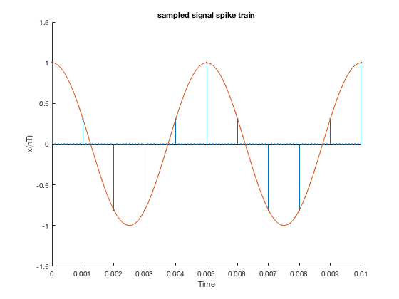
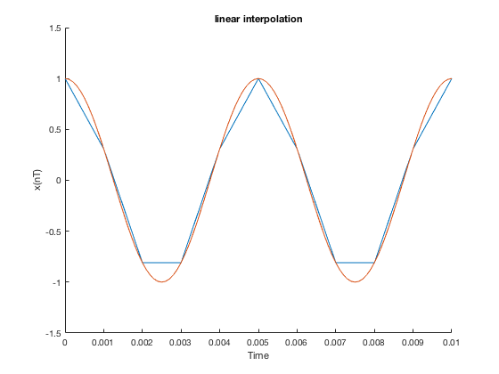
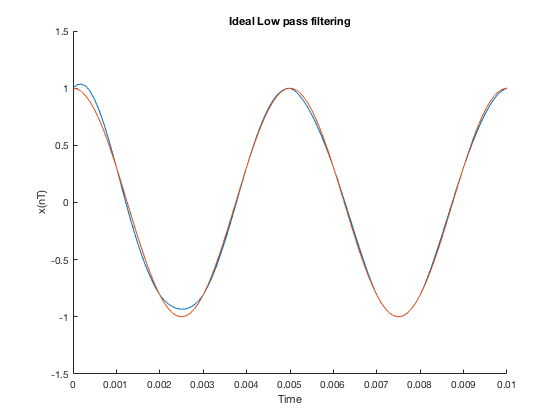

close all;
clear all;
f = 200;
fs = 1000;
T = 1/fs;
tmin = 0;
tmax = 1;
t = tmin :T :tmax;
fana = 10000;
Tana = 1/fana;
tana = tmin:Tana:tmax;
xanalog = fx(tana,f);
xdt = zeros(1,length(tana));
for i = 1:length(tana)
if mod(tana(i),T) == 0
xdt(i) = fx(tana(i),f);
end
end
figure(1)
hold on;
stem(tana,xdt,'.');
plot(tana,xanalog);
axis([0 0.01 , -1.5 1.5])
title(['sampled signal spike train'])
xlabel('Time')
ylabel('x(nT)')
hold off;

ht_li = zeros(1,length(tana));
ht_li(1:11) = 0:fs/fana:1;
ht_li(12:21) = 0.9:-fs/fana:0;
xlt_conv = conv(xdt,ht_li);
xlt = xlt_conv(11:length(tana)+10);
figure()
hold on;
plot(tana,xlt);
plot(tana,xanalog);
axis([0 0.01 , -1.5 1.5])
title(['linear interpolation'])
xlabel('Time')
ylabel('x(nT)')
hold off;

ht_sinc = zeros(1,length(tana));
t_trunc = -10*T:Tana:10*T;
hht = sinc(t_trunc ./ T);
ht_sinc(1:length(hht)) = hht;
xrt_conv = conv(xdt,ht_sinc);
xrt = xrt_conv(101:length(tana)+100);
figure()
hold on;
plot(tana,xrt);
plot(tana,xanalog);
axis([0 0.01 , -1.5 1.5])
title(['Ideal Low pass filtering'])
xlabel('Time')
ylabel('x(nT)')
hold off;
